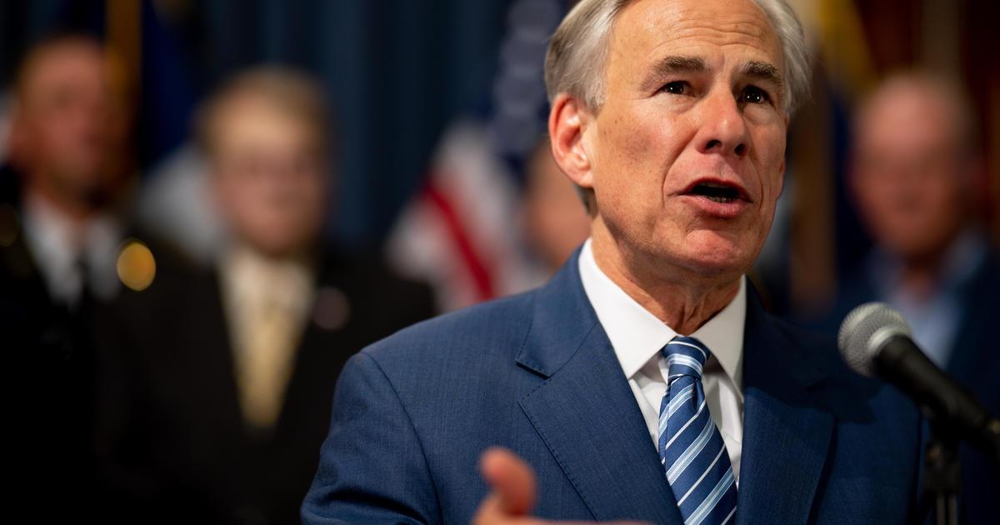

Gov. Abbott discusses preparations for incoming winter weatherAUSTIN - Gov. Greg Abbott discussed preparations ahead of an incoming arctic blast during a briefing Friday morning. He was joined by ERCOT CEO Pablo Vegas and other representatives from state agencies to advise Texans about precautions being taken Sunday through Wednesday. "There's an extraordinarily cold weather system that will be sweeping across the entire state of Texas," he said. "We need to make sure everybody in the state of Texas is aware ... We want to make it through this episode, protecting the life of every Texan and there are several ways we go about that." Abbott urged Texans to not , which could get icy, if it's not absolutely necessary. He also said he knows people are concerned whether the power will stay on during the winter weather, but he and state agencies feel "very good" about the power grid and ERCOT's ability to "effectively and successfully ensure that the power will stay on throughout the entirety of this winter storm episode." Abbott said Tuesday morning and Wednesday morning may be tightest times for the ERCOT power grid but he ensured that generators have been fully inspected and winterized for this storm system. He also said the agency has a secondary source of fuel. Vegas said ERCOT is using every tool in it's toolbox to ensure power remains. "The grid is better prepared than it has ever been before, in particular, as it relates to cold weather events like this." Vegas said there have been nearly 1,800 weatherization inspections across power generation and transmission facilities over the last couple of years, with another 450 planned this winter season. He also said ERCOT is not expecting an energy emergency during this event and it's not asking for any energy conservation at this point. The agency will continue to update a weather watch it issued earlier in the week, if conservation is necessary. Both Abbott and Vegas encouraged Texans to call local power utilities if there are any outages. Chief Nim Kidd of the Texas Division of Emergency Management also spoke during the briefing about top priorities for first responders: preserving life and preserving property. People Kidd said there are 152 warming centers open and operated by local governments across the state, which are all shown on an interactive map you can find here: tdem.texas.gov/warm. The map lists out phone numbers, addresses and hours of operation for the warming centers. Pipes and Property TDEM also features a list of all licensed plumbers in the state of Texas, in case you have a pipe burst. Kidd urged Texans to begin preparing homes now. He warned of carbon monoxide poisoning, cautioning Texans to not run a generator inside your home, to not run a car inside your garage with the garage door closed and to make sure you have ventilation if you're planning on having gas or wood-burning appliances on inside your home. Kidd also suggested Texans check emergency supplies and stock up on food and bottled water. RELATED STORY: for more features. |
 |